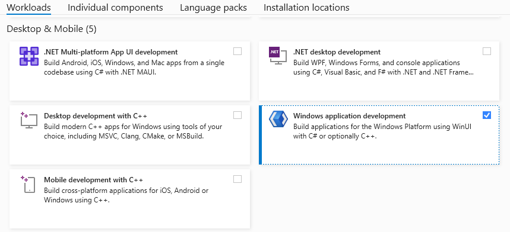
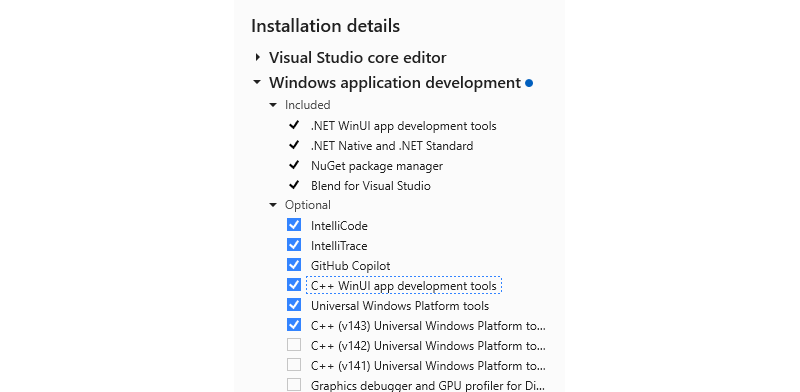
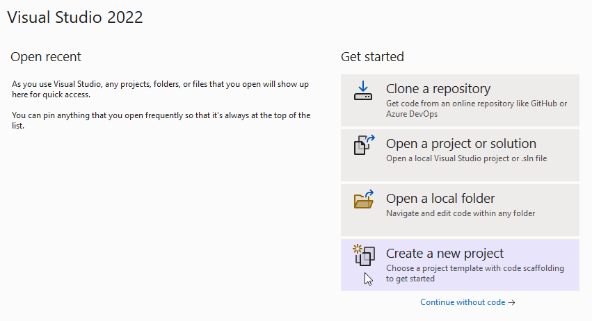
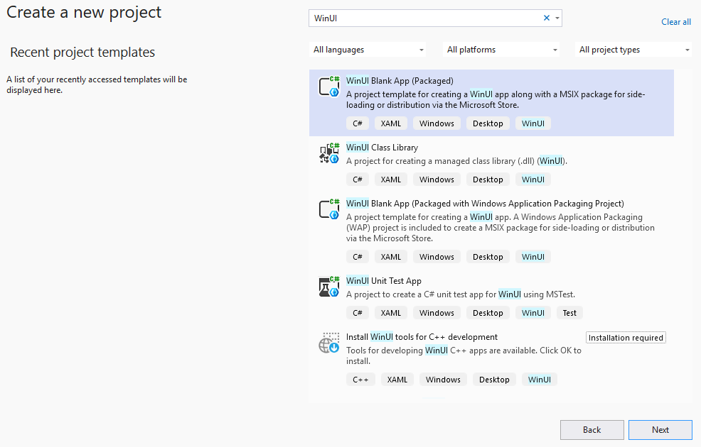
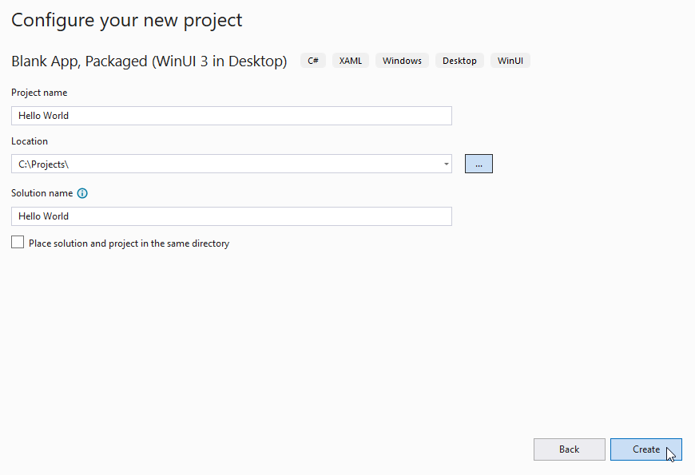
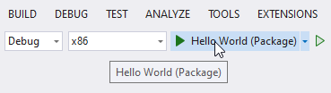
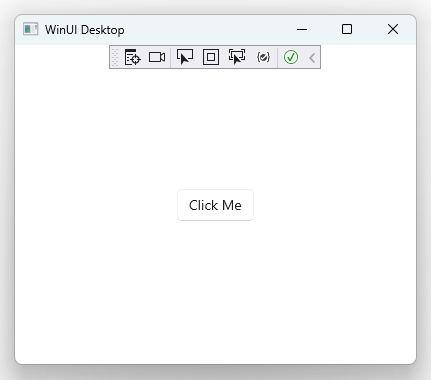
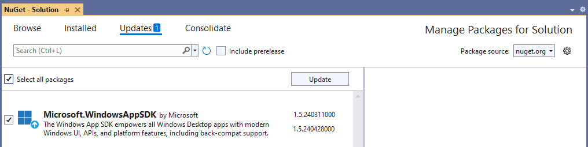

Start developing Windows apps
Welcome to Windows app development. This guide will take you through the steps needed to begin creating apps using the latest Windows development frameworks: the Windows App SDK and WinUI. It will also point you to resources that will help you learn more about Windows development. If you want a step-by-step guide to setting up your developer environment and building your first WinUI app with the latest tools, please see WinUI 101. If you are already comfortable developing apps for Windows, but want to know more about the latest tools, please see Develop Windows desktop apps.
Tip
Microsoft Copilot is a great resource if you have questions about getting started writing Windows apps.
1. Enable Developer Mode
Windows has a special mode for developers that adjusts security settings in order to let you run the apps you're working on. You'll need to enable Developer Mode before you can build, deploy, and test your app using Visual Studio.
Tip
If you don't enable it now, you'll be prompted to enable it when you try to build your app in Visual Studio.
To enable Developer Mode:
- Open Windows Settings and navigate to the System > For developers page.
- Toggle the Developer Mode switch to On and confirm your choice in the confirmation dialog.
For more information about Developer Mode, see Enable your device for development.
2. Install Visual Studio
You'll use Visual Studio, Microsoft's comprehensive integrated development environment (IDE), to create your WinUI app. It's the preferred development tool of many Windows developers and it will help you write, debug, and deploy your apps. The project templates in Visual Studio will quickly get you started with projects for Windows and many other platforms.
Tip
Before installing these tools, make sure your development computer meets the system requirements for Windows app development.
Use the link below to download and install the latest Visual Studio. The installer will walk you through the steps, but if you find you need detailed instructions, see Install Visual Studio.
The free Visual Studio Community Edition includes everything you need to create your apps. If you're working with a development team or enterprise, you might need Visual Studio Professional or Visual Studio Enterprise. See What is Visual Studio? for more info.
2.2 Required workloads and components
While installing Visual Studio, you need to install the workloads and components required for developing with WinUI and the Windows App SDK. After installation, you can open the Visual Studio Installer app and select Modify to add workloads and components.
On the Workloads tab of the Visual Studio Installer app, select the following workloads and components:
- For C# app development using the Windows App SDK, select WinUI application development.

- For C++ app development using the Windows App SDK, select WinUI application development.
- Then in the Installation details pane, under the WinUI application development node, select C++ WinUI app development tools. (This will also select any additional required components.)

Note
In Visual Studio 17.10 - 17.12, this workload is called Windows application development.
3. Create and launch your first WinUI app
Visual Studio project templates include all the files you need to quickly create your app. In fact, after you create your project from a WinUI app template, you'll already have an app that you can run, and then add your code to.
To create a new project using the WinUI C# Blank App project template:
Open Visual Studio and select Create a new project from the launch page. (If Visual Studio is already open to the editor, select File > New > Project):

Search for
WinUIand select theWinUI Blank App (Packaged)C# project template, then click Next:
Specify a project name, then click Create. You can optionally specify a solution name and directory, or leave the defaults. In this image, the
Hello Worldproject belongs to aHello Worldsolution, which will live inC:\Projects\:
Note
If you want to use this project to build the complete app in the Next steps section, name the project
WinUINotes.Click the Debug "Start" button to build and run your project:

Your project will build, be deployed to your local machine, and run in debug mode:

To stop debugging, close the app window, or click the debug "Stop" button in Visual Studio.
4. Delete sample code
The MainWindow class included with the project template includes some sample code that needs to be removed to make room for your content.
Double-click
MainWindow.xamlin Solution Explorer to open it. You should see XAML markup for aStackPanelcontrol.Delete the XAML for the
StackPanel. (You'll add your own content in its place as you create your app.)<!-- ↓ Delete this. ↓ --> <StackPanel Orientation="Horizontal" HorizontalAlignment="Center" VerticalAlignment="Center"> <Button x:Name="myButton" Click="myButton_Click">Click Me</Button> </StackPanel>If you try to run your app now, Visual Studio will throw an error along the lines of
The name 'myButton' does not exist in the current context. This is because you deleted theButtoncontrol namedmyButton, but it's still referenced in theMainPage.xaml.cscode-behind file. Delete the reference in the code file, too.Double-click
MainWindow.xaml.csin Solution Explorer to open it.Delete the
myButton_Clickevent handler.public sealed partial class MainWindow : Window { public MainWindow() { this.InitializeComponent(); } // ↓ Delete this. ↓ private void myButton_Click(object sender, RoutedEventArgs e) { myButton.Content = "Clicked"; } // End delete. }Save the file by pressing CTRL + SHIFT + S, clicking the Save All icon in the tool bar, or by selecting the menu File > Save All.
5. Update to the latest WinUI/Windows App SDK
The Windows App SDK (and WinUI, which is part of it) is distributed as a NuGet package. This means updates can be released out-of-sync with Windows and Visual Studio. As a result, the Visual Studio template you used to create your project might not reference the latest Windows App SDK NuGet package. To ensure you have the latest features and fixes, you should update your NuGet packages every time you create a new project in Visual Studio.
To update the Windows App SDK NuGet package for your project:
- In Visual Studio, with your project loaded, select Tools > NuGet Package Manager > Manage NuGet Packages for Solution....
- If an update is available, it will appear on the Updates page. Check the box next to the listed update. (To include prerelease updates, check the "Include prerelease" option. To learn more about what's included in an update, see the release notes.)
- Click the Update button, then click Apply in the Preview changes dialog, then accept the license terms to finish installing the update.

Now your project is using the latest WinUI features that are available, and it's ready for you to make it your own.
Next steps
- To get an idea of what WinUI has to offer, check out the WinUI Gallery app.
The WinUI 3 Gallery app includes interactive examples of most WinUI 3 controls, features, and functionality. Get the app from the Microsoft Store or get the source code on GitHub
- Learn more about WinUI fundamentals.
- Explore Fluent Design principles.
- Find samples and tools to help you develop apps more efficiently.